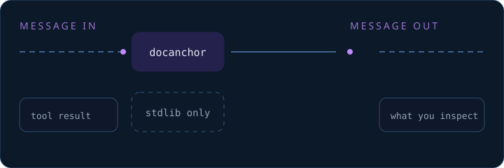

Install
consolepip install docanchor
Use
pythonfrom docanchor import check_files
for problem in check_files(["README.md", "docs/install.md"]):
print(problem) # README.md:42: docs/install.md#quick-start is not ...
Or check a string against a resolver you control:
pythonfrom docanchor import check
docs = {"install.md": "## Quick start\n"}
problems = check(
"See [install](install.md#quick-start).",
resolve=docs.get, # None means "cannot read"
source="README.md",
)
What counts as an anchor
- ATX headings
## Quick start→quick-start - setext headings (
Titleover=====) →title - duplicates get
-1,-2, as GitHub does, so both#notesand#notes-1work - explicit
<a name="custom">and any HTMLid="custom" - headings inside fenced code blocks are ignored, as are links there
- matching is case-insensitive
Slugs follow GitHub's rules: lowercase, inline code removed, punctuation dropped, spaces turned into hyphens. Emoji and other symbols disappear the same way they do on GitHub, so an emoji-only heading gets a stable (if empty) slug.
What is skipped
- external links (
https:,mailto:, …) — this is not a crawler - links without a
#anchor - images (

- reference-style links and HTML
hrefs
Those are the cases where a full link checker (or the site build) already helps.
Development
consolepython -m venv .venv
.venv/bin/pip install -e ".[test]"
.venv/bin/pytest
The suite covers every line of the package (pytest --cov --cov-branch), and the examples in the docstrings run as tests through --doctest-modules.
License
MIT.